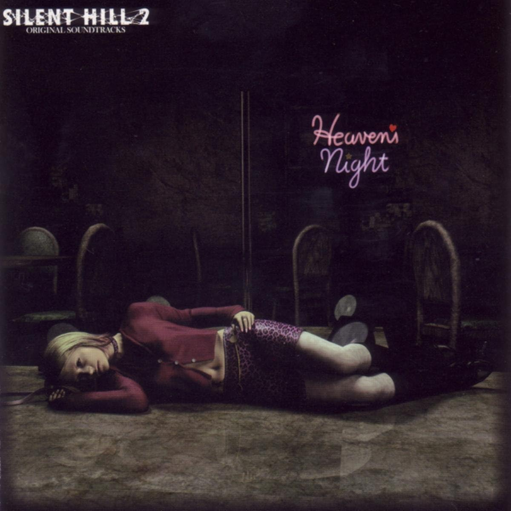

andypii_ ✦ soft-glitch ✦ luv ✦ twitch
A
Andypii_
me dicen andy ♡
twitch
live
pásate al canal ♡
✦ me dicen andy ✦ ♡ ∴ sabritas moradas ∴ ♡ ✦ luv u ✦ ♡ ∴ andypii_ ∴ ♡
✦ me dicen andy ✦ ♡ ∴ sabritas moradas ∴ ♡ ✦ luv u ✦ ♡ ∴ andypii_ ∴ ♡
LIVE
espectadores

Promise (Reprise)
Akira Yamaoka